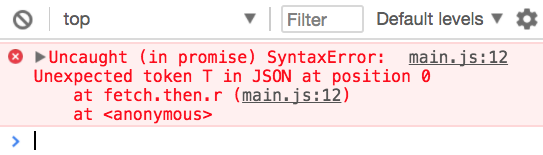

I recommend you use an Ajax library to make requests. This recommendation holds true for most projects.
Why use an Ajax library
XHR and Fetch are what we call low-level APIs. We can use them, but we have to write a lot of code on our own.
Ajax libraries vs XHR
When you use XHR, you need to write event listeners and callbacks.
Event listeners and callbacks aren’t the best pattern to use for more Ajax. Promises are much better than event listeners and callbacks when it comes to Ajax. You’ll see some examples in the next module.
Ajax libraries can help you convert XHR into Promise-driven code so you don’t have to do it yourself. That’s why I recommend you use an Ajax library.
Ajax libraries vs Fetch
When you use Fetch, you need to write the then method twice.
First, you’ll get an error if the response isn’t a JSON. This error doesn’t come from the API itself. It happened because we made a mistake. We tried to parse data that isn’t JSON.

Error parsing JSON
We need to handle the right response with the right methods for real requests. This means we need to call json, text, blob, or other methods according to the type of content the server sends back to us. This extra code can be handled by an Ajax library.
Second, Fetch doesn’t send errors into the catch call. You have to do it yourself. This extra code can be handled by an Ajax library too.
fetch('https://api.github.com/user/repos')
.then(response => {
// Extra code here can be handled by an Ajax library
return response.json()
.then(body => {
if (response.ok) return body
return Promise.reject({ body })
})
})
.then(body => console.log(`body is `, body))
.catch(error => console.log(`error is`, error))
That’s why I recommend you use an Ajax library.
When to use XHR and Fetch by themselves
You want to use XHR and Fetch over an Ajax library only if:
You don’t need to handle errors
You don’t want the add the library as a dependency of your project
Recommended libraries
There are many libraries out there that help you do Ajax. The ones I recommend are:
Axios and zlFetch do the same thing—they help reduce the amount of code you have to write.
Axios has a stronger community. More people are using Axios. It’s generally the safer choice. It’s also built on XHR, so you’ll be able to cancel requests and track the progress of your request.
zlFetch is a smaller library since its built on Fetch. It’s a project built by yours truly.
I’m going to teach you zlFetch over Axios because:
I built zlFetch and I’m biased 😝
You’ll be able to learn Axios on your own later since you know everything you need to know
Downloading and installing zlFetch
You can use zlFetch by placing this script tag before your main JavaSrcipt file.
Note: This code gives you the latest version of zlFetch. If you’re using it on a real project, I recommend you to use a version number like 2.1.5. You can find the latest version on Github or npm.
zlFetch transforms fetch responses for you. You can use the response from the server in the first then chain. If the response is an error, zlFetch directs it to the catch chain.
zlFetch("http://some-website.com")
.then(response => {
const headers = response.headers;
const body = response.body;
})
.catch(error => {
const headers = error.headers;
const body = error.body;
const status = error.status;
})
These properties are available in the response object:
headers—response headers
body—response body
status—response status
statusText—response status text
response—original response from Fetch
Creating query strings
zlFetch creates query strings for you so you don’t have to deal with them. To create query string, add a queries option as the second argument.
To send a POST request, you set method to post. Alternatively, you can use the post method.
// Setting method to post
zlFetch("http://some-website.com", {
method: 'post'
})
// Using the post method
zlFetch.post("http://some-website.com", options)
You need to send a body along with most POST requests. You can do this with the body option.
zlFetch helps you convert your body object into a JSON String automatically. It also helps you set Content-Type to application/json.
// Sends a POST request
zlFetch.post("http://some-website.com", {
body: { key: 'value' }
})
// Result
fetch("http://some-website.com", {
method: "post",
headers: { "Content-Type": "application/json" },
body: JSON.stringify({ key: 'value' })
})
Other content types
You can choose to send a different Content-Type. To do this, you set headers and Content-Type manually, like this: